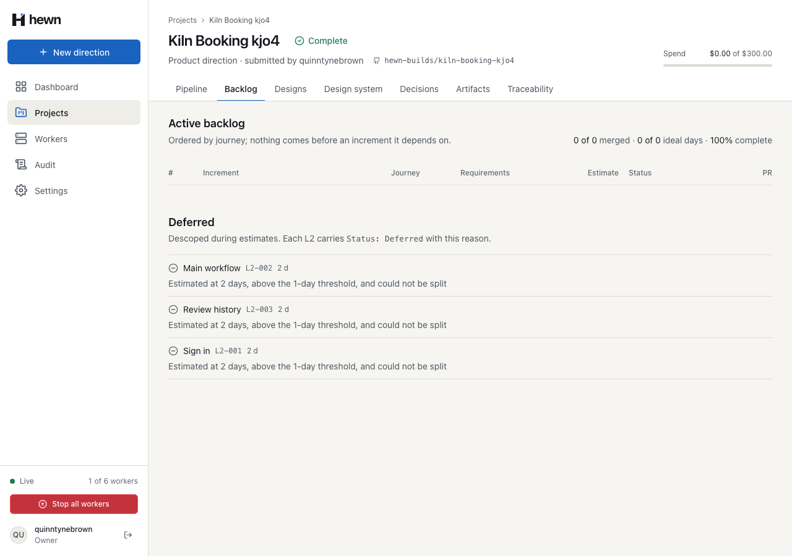
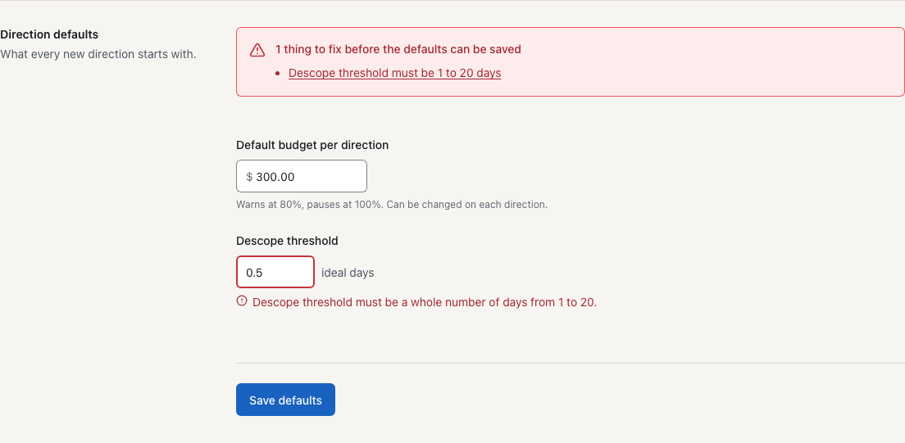
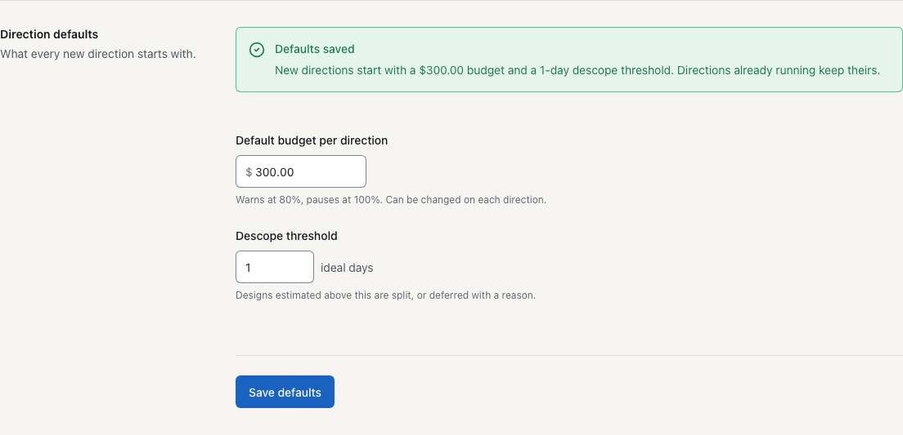
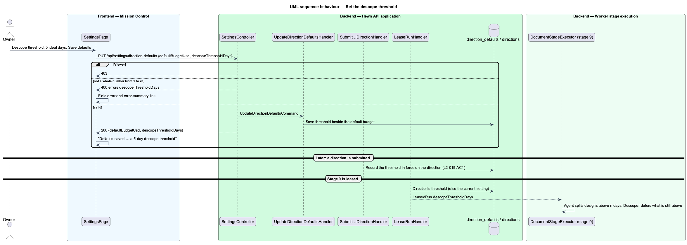
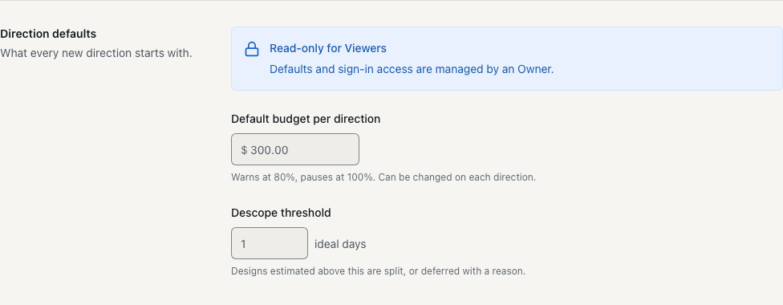
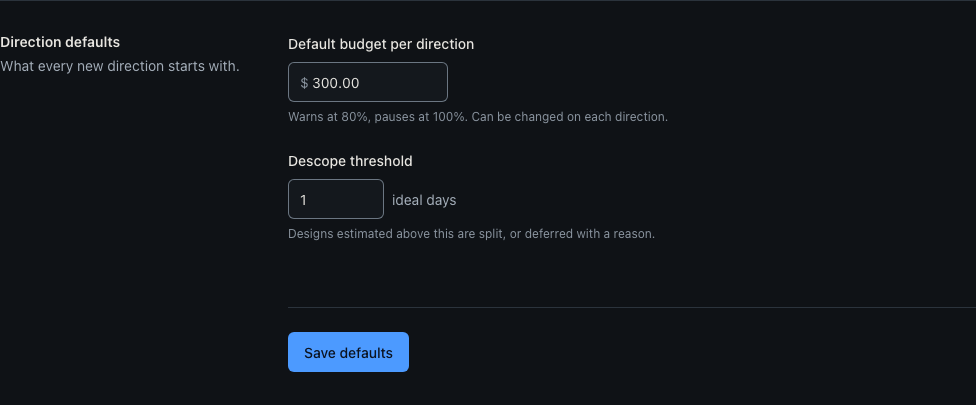
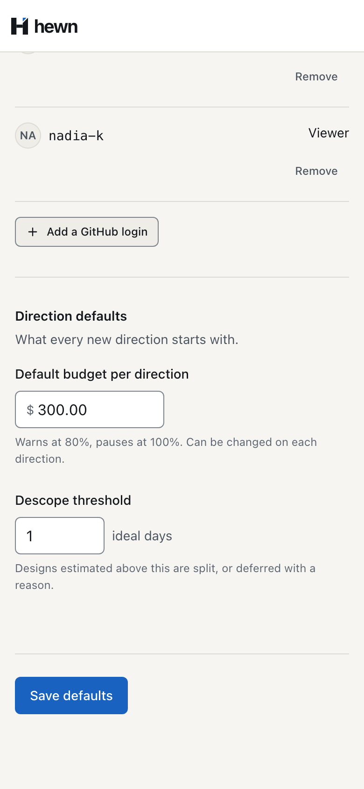

An Owner sets the threshold; stage 9 splits and defers against it.



RuleFor(c => c.DefaultBudgetUsd)
.InclusiveBetween(DirectionDefaults.MinBudgetUsd, DirectionDefaults.MaxBudgetUsd)
.WithMessage("Default budget must be between $10.00 and $10,000.00.")
.WithState(_ => "Default budget is out of range");
RuleFor(c => c.DescopeThresholdDays)
.Must(d => d is null || (d % 1 == 0 && d >= DirectionDefaults.MinDescopeThresholdDays && d <= DirectionDefaults.MaxDescopeThresholdDays))
.WithMessage("Descope threshold must be a whole number of days from 1 to 20.")
.WithState(_ => "Descope threshold must be 1 to 20 days");
/// <summary>
/// The descope threshold in ideal days stage 9 splits and defers against, fixed when the direction is submitted
/// (L2-019 AC1). Null for directions submitted before it was recorded; they use the current default.
/// </summary>
public int? DescopeThresholdDays { get; private set; }
public void StartWithDescopeThreshold(decimal days) => DescopeThresholdDays = (int)days;
var startsWith = await defaults.ReadAsync(cancellationToken);
var project = Project.CreateWithProductDirection(
command.Name!,
command.Idea!,
string.IsNullOrWhiteSpace(command.StackPreference) ? null : command.StackPreference.Trim(),
repository,
command.BudgetUsd ?? startsWith.DefaultBudgetUsd,
user.Login,
clock.GetUtcNow());
var direction = project.Directions[0];
direction.StartWithDescopeThreshold(startsWith.DescopeThresholdDays);
// The threshold the direction was submitted with; older directions use the current default (L2-019 AC1).
direction.DescopeThresholdDays ?? (await defaults.ReadAsync(cancellationToken)).DescopeThresholdDays,

it('tells the agent the threshold from the lease, to split against (L2-019 AC1)', async () => {
const { ctx } = context();
const instructions: string[] = [];
await execute(
{ run: async (task) => (instructions.push(task.instructions), new ScriptedStageAgent().run(task)) },
ctx,
{ ...leased, descopeThresholdDays: 5 },
);
expect(instructions[0]).toContain('First split any design above the descope threshold of 5 ideal days');
});
const rule =
d.estimateDays > threshold
? {
rule: 0,
reason: `Estimated at ${d.estimateDays} days, above the ${threshold}-day threshold, and could not be split`,
}
public async Task A_direction_submitted_before_the_change_keeps_the_threshold_it_started_with()
Assert.Equal(HttpStatusCode.Created, submitted.StatusCode);
(await owner.PutAsync("/api/settings/direction-defaults", new { defaultBudgetUsd = 300m, descopeThresholdDays = 1m })).EnsureSuccessStatusCode();
var run = (await (await _factory.RegisterWorkerAsync()).LeaseAsync())!;
Assert.Equal(3m, run.Body.GetProperty("descopeThresholdDays").GetDecimal());
for (const days of ['0.5', '21', '']) {
test(`"${days}" is refused with a linked error and nothing is saved`, async ({ page, settings }) => {
await signIn(page, 'quinntynebrown');
await settings.open();
await settings.setThreshold(days);
await expect(settings.errorSummary).toContainText('Descope threshold must be 1 to 20 days');
await expect(settings.thresholdError).toHaveText(
/Descope threshold must be a whole number of days from 1 to 20\./,
);
await expect(settings.threshold).toHaveAttribute('aria-invalid', 'true');
await settings.errorSummary.getByRole('link', { name: 'Descope threshold must be 1 to 20 days' }).click();
await expect(settings.threshold).toBeFocused();
await settings.open();
await expect(settings.threshold).toHaveValue('3');
await settings.setThreshold('1');
await expect(settings.savedCallout).toContainText('a 1-day descope threshold');
stopWorkers = startWorkers(1, 150);
// Every design the agent estimated at 2 days is above the 1-day threshold, and none was split.
await expect(backlog.deferredItem(0).reason).toHaveText(
'Estimated at 2 days, above the 1-day threshold, and could not be split',
{ timeout: 120_000 },
);
expect(await backlog.deferred.count()).toBeGreaterThan(0);
await expect(backlog.deferred.filter({ hasNotText: 'above the 1-day threshold' })).toHaveCount(0);
});


